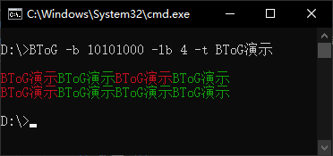

BinaryToGraphics (BToG) 通过一串二进制码转换为图形
（1 = 红色， 0 = 绿色）
效果演示:
产品信息:
| 名称 | 语言 | 文件大小 | 发布日期 | 版本 |
|---|---|---|---|---|
| BinaryToGraphics | 简体中文（zh-Hans） | 98.5 KB (100,864 字节) | 2023/6/19 13:00 | Beta 1.0.1（内部版本002） 更新日志 |
下载:
BinaryToGraphics（可能较慢）